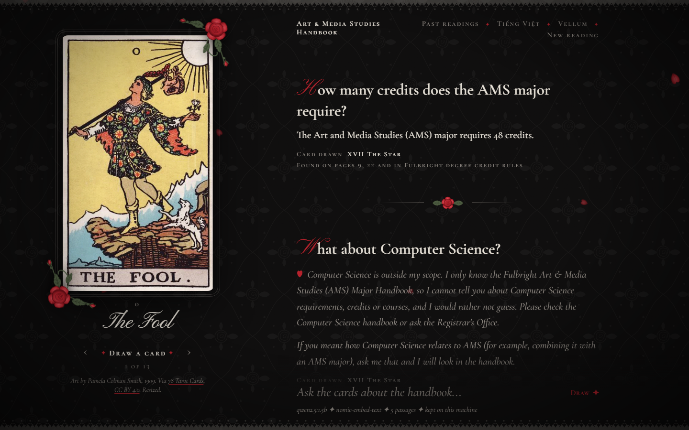
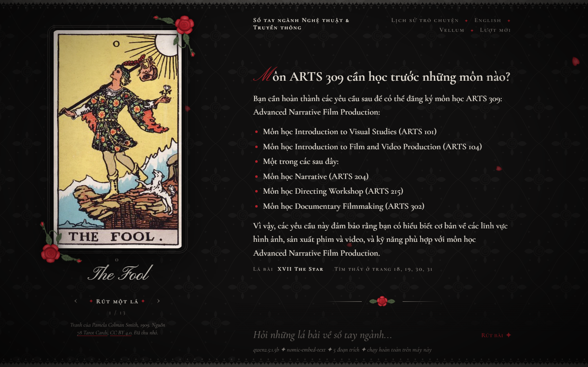
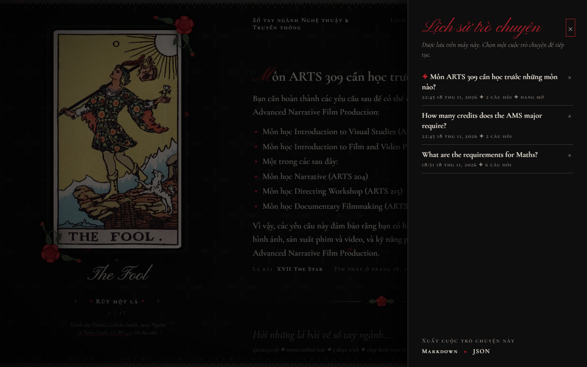
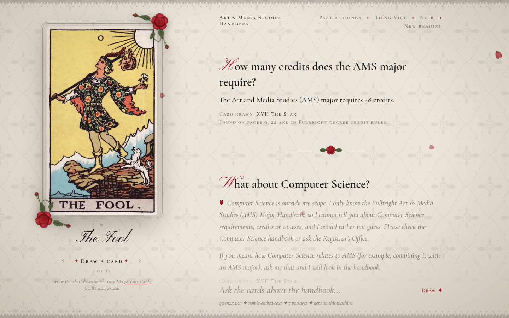

Large language models answer fluently but do not know institution-specific documents, and when they lack an answer they often invent one. Retrieval-Augmented Generation (RAG) addresses this by retrieving passages from a document collection and asking the model to answer only from them. This project builds a RAG chatbot that runs entirely on a personal laptop (Windows 11, 8 GB RAM, integrated Intel graphics) with open-source components: Ollama serving qwen2.5:1.5b and nomic-embed-text, a ChromaDB vector store and a Flask web interface. Its knowledge source is the B.A. Art and Media Studies (AMS) Major Handbook of Fulbright University Vietnam. Nothing leaves the machine: documents, index, models and conversation history stay local, there are no API costs, and the system keeps working without an internet connection.
The report follows the project tasks: PDF support (Task 1), the handbook chatbot and its evaluation (Task 2), Docker deployment (Task 3) and the web interface (Task 4), and ends with limitations and lessons learned. A recurring theme is that most wrong answers were not caused by the language model alone: many came from how the PDF was split into chunks or from questions the handbook simply cannot answer, and fixing those causes improved results more than prompt wording did.
Indexing. Every PDF page becomes one LangChain document carrying its page number, so each chunk can be cited as "(p. 9)". A fingerprint of the files and chunk settings is stored with the index; when a document or a setting changes, the index is rebuilt automatically (the baseline reused an old index forever). Retrieval uses cosine similarity, so scores lie between 0 and 1 and a threshold is meaningful, and weak chunks are filtered one by one instead of averaging all scores. Generation uses a prompt that allows only the retrieved context, requires a source citation and, when the context does not contain the answer, a fixed sentence: "I could not find this in the handbook." Every setting can be overridden by an environment variable, which is how Docker configures the app.
Change compared with the baseline run_txt.py | Why |
|---|---|
| PDF support with page numbers and text repair | Task 1; citations; broken words hurt retrieval |
| Automatic re-indexing (fingerprint) | The baseline never noticed new files |
| Cosine similarity, per-chunk threshold | Interpretable scores; one strong chunk is not diluted |
| Grounded prompt, citations, "not found" sentence | The baseline fell back to general knowledge |
| nomic task prefixes | The embedding model was trained with them; better score separation |
| Section labels on chunks; table of contents skipped | Fixed answers that borrowed a neighbouring course's or the minor's data |
| Scope guard for other majors | Main hallucination: AMS figures given as other majors' figures |
| Conversation memory with follow-up rewriting | "How often is it offered?" after a question about ARTS 309 |
| Number grounding check | Flags invented figures in the interface |
| Questions in any language | Vietnamese users; English-only embedding model |
PDF text is extracted with pypdf, one document per page. Inspecting the extracted text showed several extraction errors that a RAG system silently inherits. pypdf inserts stray spaces inside words ("s tudents", "c urriculum", "als o"); a split word is tokenized and embedded differently from the real word, so it lowers retrieval scores. Without an offline dictionary, the repair uses the handbook's own vocabulary: two pieces are joined when the joined word occurs elsewhere in the document more often than the rarer piece. Headings set in a decorative font extract "ti" as ";" or "8" ("Descrip;on"), which a targeted regular expression fixes; Unicode normalisation turns ligatures such as "fi" into plain letters, and table-of-contents dot leaders are removed. Words that appear only once ("increasing ly") cannot be repaired this way, and text inside images is not extracted because the pipeline has no OCR step.
Two later fixes also belong to document processing. First, the table of contents (page 2) is now skipped entirely: it lists every heading side by side, ranked first for almost any question, and led the model to add "Major Requirements (48 credits)" and "Minor Requirements (24 credits)" into a wrong total of 72 credits. Second, a chunk cut below its heading loses its meaning. The prerequisites of ARTS 309 continue onto the next page, so the chunk "Prerequisites: ARTS 101 … AND ARTS 104 …" never mentioned ARTS 309, and the bot answered with the prerequisites of ARTS 308. Every chunk that continues a course description or a requirement block now starts with a label such as [ARTS 309: Advanced Narrative Film Production, continued], and requirement blocks say what they are for (degree requirements versus the optional minor). The same loader also reads TXT files, and any other PDF folder can be indexed into its own vector store (cli.py --data-dir data/test_pdf).
The AMS handbook was chosen because it combines program requirements, a full course catalogue, long course descriptions, learning outcomes and policies in 31 pages, and because it contains real inconsistencies that test a RAG system honestly. The test set has 20 questions in eight categories (requirements, policies, course offerings, learning outcomes, careers, student life, three questions where the handbook contradicts itself or is incomplete, and one it cannot answer). For each answer the evaluation script records whether an expected page was retrieved, a keyword score and the time; the verdict was assigned by reading each answer.
| Model | Retrieval hit | Avg keyword score | Avg time | Correct | Incomplete | Incorrect | Ambiguous |
|---|---|---|---|---|---|---|---|
| qwen2.5:1.5b | 100% | 0.87 | 11.5 s | 11 | 4 | 3 | 2 |
Retrieval rose from 95% to 100% and the keyword score from 0.81 to 0.87 after the chunk labels and section breaks were added (measured with the same 20 questions; this run predates the two supplementary sources described below).
Testing exposed a more serious failure. Asked "Maths require how many credits to graduate?", the bot answered with AMS figures. Vector search always returns the five closest chunks, and the handbook is full of "credits" and "requirements", so this question scored 0.64, as high as a real AMS question (0.66); even "What is the weather today?" passed the 0.35 threshold. A threshold alone cannot solve this. The fix has three layers: a rule-based guard declines questions that name another subject, course code (CS201, MATH 205) or course of another major unless they also mention AMS; a question whose best passage scores below 0.60 is declined as off-topic; and between 0.60 and 0.68 the model answers a yes/no question about whether the question concerns the handbook. To measure the effect, 25 real questions were taken from the Applied Mathematics and Computer Science handbooks (each with its true answer), many phrased exactly like AMS questions, together with 25 control questions that must still be answered.
| Mode | Other-major questions declined | Answered anyway | …repeating an AMS fact | Controls answered |
|---|---|---|---|---|
| Baseline (no guard, original prompt) | 11/25 | 14 | 7 | 5/5 |
| With scope guard | 25/25 | 0 | 0 | 25/25 |
Without the guard the bot said the Computer Science major requires 48 credits (true: 56), that the CS capstone needs a GPA of 3.6 (true: 3.5) and that CS201 requires ARTS 101 and ARTS 107. These are exactly the confident, plausible errors that make hallucinations dangerous. The 25/25 result is optimistic, because the course-name and course-code rules were written after reading these questions; a held-out set from other handbooks would be a fairer test.
The browser sends the last turns with each question. Short or pronoun-based follow-ups are rewritten into a stand-alone query using the previous question and its course code, so "How often is it offered?" after a question about ARTS 309 retrieves ARTS 309 ("every other year"). A follow-up to a declined question stays declined, and declined answers are not fed back to the model as context. After generation, any number in the answer that appears in none of the retrieved passages is flagged under the answer; this caught an invented "120 credits".
Two questions showed the limits of a single handbook. "How many credits are required to graduate?" was answered with 72 (major plus minor), but the handbook never states the total: it lists the General Curriculum (40 credits: 16 Core, 24 Exploratory) and the major (48). The total of at least 128 credits is stated in the Applied Mathematics handbook as part of the degree structure shared by all programs, and faculty names appear only on the official AMS web page. Two short supplementary text sources were therefore added and are cited by name, separately from the handbook. This goes slightly beyond "one handbook", so it is reported here as an extension. It also introduced a new error that shows how sensitive small models are: "How many credits does the AMS major require?" was briefly answered with 128 until the source and the prompt stated explicitly that the major is 48 credits and the whole degree at least 128.
Changing the prompt from "use general knowledge if the context is weak" to "answer only from the context" trades hallucinations for refusals; together with the guard it made wrong answers rarer but refusals more frequent. qwen2.5:3b was tested on a small set of questions only: it answered faculty and department-head questions more precisely (it stated that no department head is named) but took roughly twice as long on this laptop (30–50 s per question), and with the first version of the prompt it refused the graduation-credit question that 1.5b answered. Because a full evaluation with 3b did not fit the time available, qwen2.5:1.5b remains the default; a complete model comparison is future work.
The embedding model is trained mostly on English: the Vietnamese question "Môn ARTS 309 cần học trước những môn nào?" retrieved pages 20 and 25 instead of 30–31. Non-English questions are therefore translated into English for the guard and the search, answered in English (the 1.5b model was clearly less accurate when asked to write Vietnamese directly) and translated back. Greetings, declines and "not found" messages are written by hand in Vietnamese. Each translation is checked in code (still English? course codes and numbers kept? unusually long?) and, if it fails, the correct English answer is shown with a note. The 1.5b model keeps codes and numbers but often mistranslates course titles, and translation adds 10–30 seconds per question.
The deployment is a Docker Compose stack with three services. ollama runs the model server and stores models in a named volume, so they survive restarts. ollama-init runs once, pulls the embedding model and the LLM (and a translation model if one is configured) and exits; the app waits for it to finish successfully. app builds the chatbot image from a Python slim base, mounts source_code/data read-only (new PDFs added there trigger a rebuild of the index) and keeps the vector store and the saved conversations in two more named volumes. All settings are environment variables, for example LLM_MODEL=qwen2.5:3b docker compose up. On macOS, Docker cannot use the Apple GPU, so the README also documents running only the app container against a natively running Ollama through host.docker.internal. On the final test laptop (Windows 11, Docker Desktop with WSL 2, 7.7 GB RAM) the app image was built and run in exactly this way: the container indexed the handbook through the host's Ollama and answered a test question with page citations (about 110 seconds for the first question, including indexing). The full Compose stack, which downloads about 4.5 GB of models into a container, was not run on this laptop because of its memory and slow connection. Testing found three problems. The Dockerfile did not copy chats.py, added with saved conversations, so the app could not start; this is fixed. Windows Update was disabled, so wsl --update failed and WSL was installed from Microsoft's release package instead. Finally, the antivirus inspects HTTPS traffic with its own root certificate, which the container does not trust, so pip install failed until that certificate was passed to the build; on machines without such software the plain build works.
The interface is a Flask application with hand-written HTML, CSS and JavaScript rather than Streamlit or Gradio, which gave full control of the design and requires no external scripts, so it works offline like the rest of the system (the fonts are stored locally as well). It is styled as a Victorian tarot reading table in black or vellum, bone white and rose red: a faint rose-damask wallpaper, white lace along the top and bottom edges, rose sprays on the card's mount, slowly falling petals and a copperplate script title. The left side shows a deck of Rider-Waite-Smith cards from a Figma Community file (credited under CC BY 4.0). Of the file's 78 cards, the 13 from The Fool to The Hanged Man are exported so far; a script exports the rest. The deck shuffles while the model works and draws a card when the answer arrives, which turns the waiting time of a slow local model into part of the experience.
Functionally, answers stream word by word, page citations are highlighted, the retrieved excerpts can be opened under each answer, and declined questions are set apart in muted italics. The interface is available in English and Vietnamese. Every finished turn is saved on the server as a JSON file; "Past readings" lists the saved conversations, reopens one to continue it, deletes it, and exports the open conversation as Markdown or JSON. The layout adapts to phone screens.




TRANSLATE_MODEL setting allows a larger model.The most useful habit in this project was reading the retrieved chunks before blaming the model. Several "hallucinations" turned out to be document-processing problems: a page break that separated a course from its prerequisites, a table of contents that placed the major's and the minor's credits side by side, a requirement block whose purpose was not stated. Fixing those raised retrieval to 100% on the test set. Other failures were real model errors that no prompt fully removed, which is why code-level safeguards (the scope guard, the number check, the translation checks) proved more dependable than instructions to a 1.5-billion-parameter model. Finally, a RAG system can only be as complete and consistent as its sources: some correct answers required sources beyond the handbook, and some questions have no single correct answer because the handbook contradicts itself. The resulting system runs fully offline on a modest laptop, cites its sources, declines what it does not know, and makes its remaining weaknesses visible instead of hiding them.